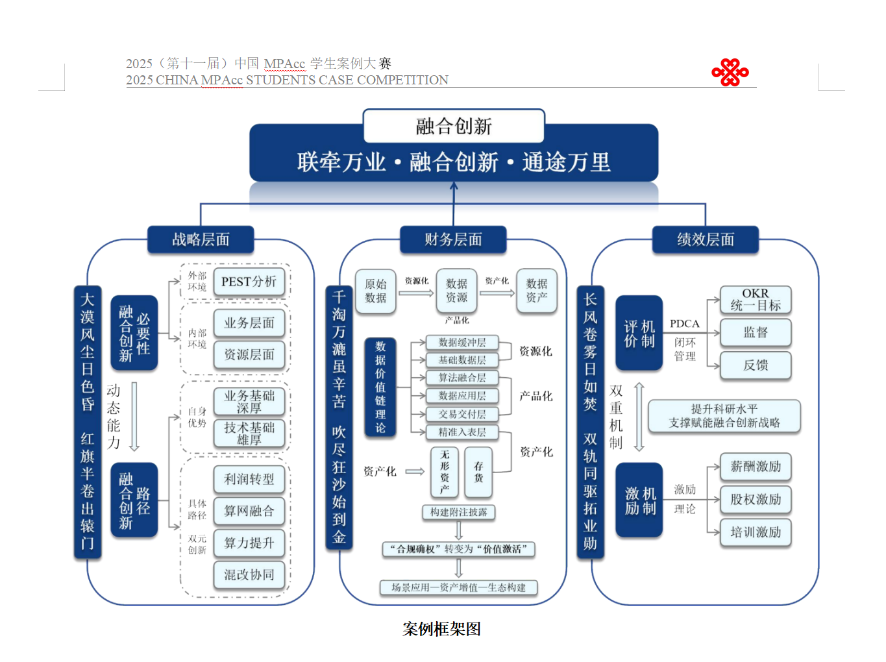
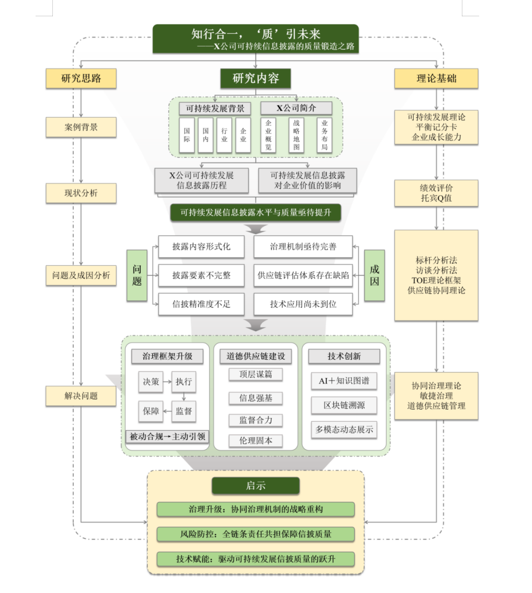
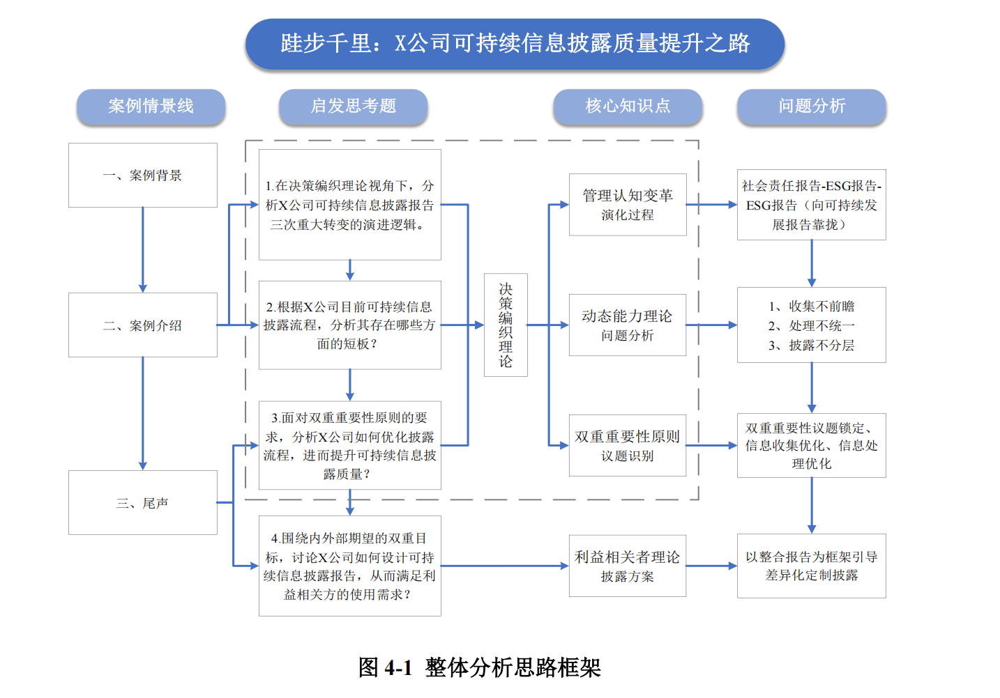

我是谁
2027 届会计专硕研究生，拥有费用会计、金融审计、常规审计三段实习经历，持续把课堂知识放进真实业务现场验证。
OPEN TO 2027 GRADUATE OPPORTUNITIES
财务专业训练 × 审计现场经验 × 案例研究表达
把复杂问题拆解成可验证、可执行的判断。
A finance candidate with a systems mind.
2027 届会计专硕研究生，拥有费用会计、金融审计、常规审计三段实习经历，持续把课堂知识放进真实业务现场验证。
好的财务工作不止于记录结果，更要识别风险、解释变化，并让业务参与者能够据此做出更好的决定。
从 Excel 函数提效、ERP 取数到审计底稿与案例框架，我擅长把信息整理成结构，把结构转化为结论。
Three contexts. One consistent way of working.
西安西电电力电容器股份有限公司
独立负责费用会计全板块工作，连接单据审核、业务沟通与集团报表。
信永中和会计师事务所（昆明）
深度参与农信社改制项目安宁市小组的现场审计与底稿工作。
深圳大族激光科技股份有限公司
参与数据收集、访谈、现场抽盘及各分部仓库与在产产品线盘点。
Research, structured into a point of view.
CASE 01 / CHINA UNICOM
围绕中国联通融合创新战略，聚焦数据资源管理及入表、数据资源经济价值、绩效考核与激励机制，完成案例分析报告。

CASE 02 / SUSTAINABILITY DISCLOSURE
以电力装备行业 X 公司为对象，分析从社会责任报告到 ESG 报告、再到战略深度融合的演进，提出治理机制、道德供应链与技术应用三维优化路径。


Precision is a habit, not a feature.
在财务核算、审计实务和数据整理之间建立连接，用工具减少重复，用结构保留判断。
会计专硕 / MPAcc
院二等奖学金（成绩前 20%）国际经济与贸易 / 学士
主修：统计学、会计学、宏观经济学、国际经济学、管理信息系统班级学习委员 · CMA 校园大使 · 学生会外联部
策划并举办 CMA 校园分享会，40+ 名同学参与；协助组织会计讲座。LET'S TALK / 联系我